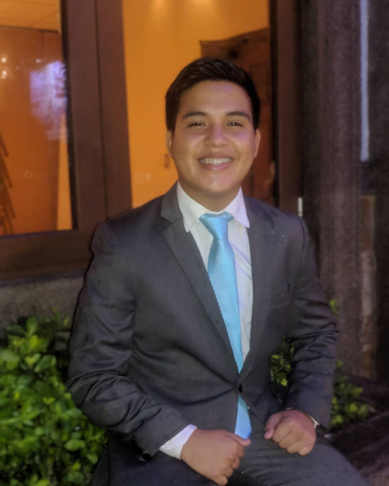

2007-2012
2012-2015
Bachillerato Técnico Profesional en Informática
2019-Presente
2012-2013
2020
2022
2022
2014-2019
Marzo 2018 - Septiembre 2018
Marzo 2021 - Septiembre 2021
Agosto 2022 - Actualidad
Soy un joven que en el ámbito técnico, cuenta con una base sólida en programación y resolución de problemas, con conocimientos en lenguajes de programación, desarrollo web, y sistemas de información. Tengo habilidad para analizar algoritmos y diseñar soluciones a problemas.
Además de mis habilidades técnicas, poseo la curiosidad y el deseo constante de aprender en el campo tecnológico. Tengo la capacidad para trabajar en equipo de manera colaborativa y con comunicación efectiva. La adaptabilidad, la perseverancia y la ética profesional son características escenciales de mi vida al abordar problemas con integridad y responsabilidad.
Nací en San Pedro Sula, pero fui registrado en San Marcos, Santa Bárbara; la capital de los juegos tradicionales. Soy fanático del fútbol desde que tengo memoria y en mi adolescencia también desarrollé un gusto por la música y su trasfondo; actualmente toco la guitarra como hobbie. Nací en un hogar conservador. En mi familia la mayoría somos cristianos protestantes y en mi nucleo familiar están mis padres, Félix y Paty, y mi hermana menor Génesis. Me gusta el deporte en general y siempre que puedo juego fútbol rápido en la universidad, shoutout para mis aleros Darwin y Roger.